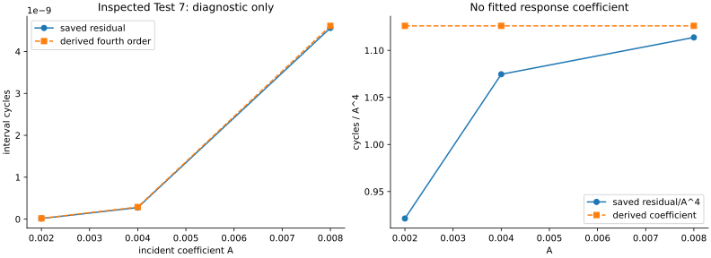
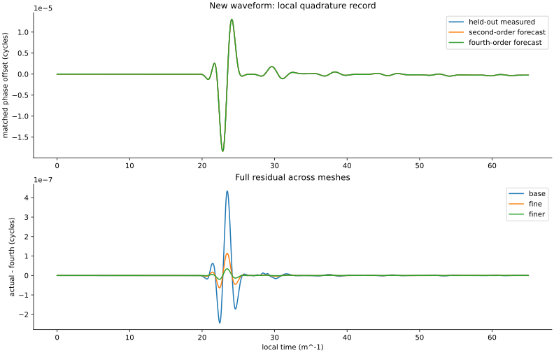
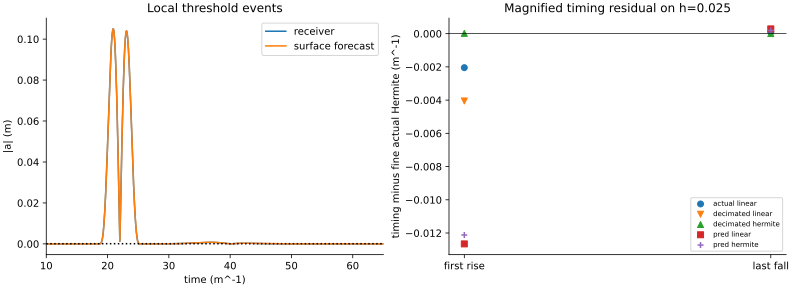

# Test 7 fourth-order follow-up Run run-29c4c4228ffddbb4; analysis analysis-0001-ac36b679; classification pass. Unchanged SS OCF 1 action and Test 6 clock calibration. Original Test 7 remains failed. Prior Test 7 comparison is an inspected-data diagnostic; held-out wave is the prospective check. No two-object recoil, coordinate invariance, gravity, angular stability, or emergent spacetime is tested. Held-out interval: actual -2.087776737e-07; order-two -2.093903858e-07; order-four -2.089527184e-07 cycles. Numerical interval budget 1.295e-09 cycles. conservation: pass heldout-interval: pass heldout-waveform: pass marker-timing: pass prediction-first: pass record-resolution: pass sign-even: pass prior-diagnostic Question: Does the derived fourth-order coefficient explain the inspected residual sign and scaling? Reading: Compare the saved Test 7 amplitude ladder at the same nominal A=.004 marker times. Significance: This diagnoses the missing order independently of a fitted coefficient. Limitation: The prior histories and marker times were already inspected; this is not a prospective prediction. heldout-phase Question: Does the locked fourth-order prediction improve a new local clock history? Reading: Held-out finest trace error: second 0.1882%, fourth 0.1712%. Significance: A separate waveform tests the coefficient after the inspected-history diagnostic. Limitation: Quiet phase at the pulse markers is counterfactual; grid differences and inversion error remain. marker-reconstruction Question: Do derivative-informed markers and twice-frequent output explain local timing error? Reading: On h=.025, compare markers at 0.05 and decimated 0.1; coarse vacuum/known-Z maximum errors are 0.05998/0.05981. Significance: Separates temporal interpolation from surface-propagation error. Limitation: The coarse vacuum control is post-hoc; Hermite cannot repair spatial dispersion or WKB error.


